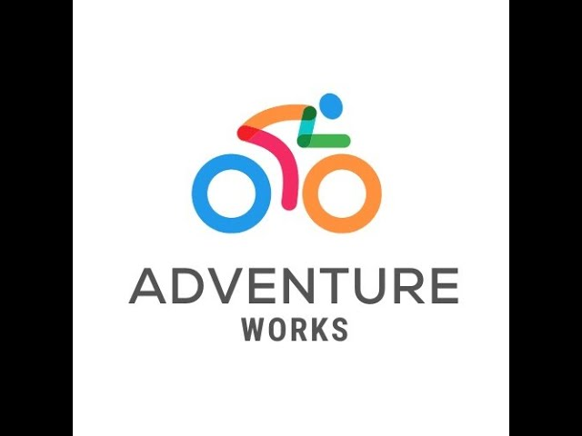

In this project, I analyzed Adidas sales data for 2020 and 2021, sourced from Kaggle. After conducting thorough data cleaning, I utilized Power BI to develop interactive dashboards and visualizations. The analysis emphasizes critical sales trends, identifies top-performing products, and evaluates regional sales performance, offering valuable insights to inform strategic decision-making.


This project centered on the analysis of brewery market data to derive actionable insights. Following thorough data cleaning and preparation, I leveraged Excel to develop comprehensive visualizations and dashboards. The analysis revealed critical market patterns, identified high-performing regions, and examined seasonal demand fluctuations, offering strategic insights to guide informed decision-making.
This project involved an in-depth analysis of sales data from Edenbridge Super Store for the years 2011 to 2013, utilizing Power BI for data visualization. Following data cleaning and preparation, I developed interactive dashboards to showcase critical sales trends, product performance metrics, and customer demographic insights. The analysis provided strategic insights into top-performing products, seasonal sales fluctuations, and customer purchasing patterns, supporting data-driven decisions to optimize business operations and enhance customer satisfaction.

In this project, I utilized the AdventureWorks 2019 database to perform a comprehensive analysis through a series of SQL queries. The focus was on querying and interpreting sales data, customer information, and product details. I employed a range of SQL techniques, including joins, subqueries, aggregations, and window functions, to extract valuable insights and support data-driven decision-making for business operations.